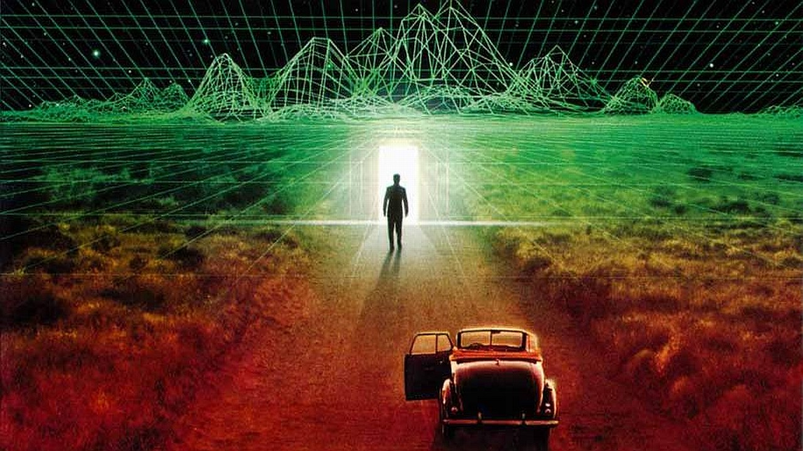

Reading #3
Q1. From the podcast, how has our understanding of what dinosaurs really look like evolved? Describe the progression of how we portrayed them and how might this affect our understanding of what Archeology is saying about them.
Originally we thought that dinosaurs were very heavy, sluggish and weighed down by their massic body parts. Then Bachar started doing more research and eventually illustrated them more as super-birds that were actually very agile. Then other paleo-artists started illustrating them as super jacked creatures that went to the gym all the time. Then Bachar thought about the infinite possibilities of dinosaurs that could have existed and illustrated them based on speculation and current science. He wanted to keep an open mind to weird possibilities because we don't know the whole truth about what dinosaurs looked like. Today we are more open to the different ways dinosaurs could have theoretically looked like, for example, more body fat, humps or even feathers.
Q2. The artist/archaeologist John Conway who is doing interpretations of dinosaurs is obviously taking liberty with what could be the actual truth of how these creatures existed. What other disciplines and forms of studies use similar techniques that reminds you of this method or process. Please elaborate with your examples both written as well as images and links.
simulation theory proposes that all of reality, including the Earth and the universe, is in fact an artificial simulation, most likely a computer simulation.But I was thinking what if the reality is really just a dream of the simulation and our dream is the reality itself like the Matrix reference. It’s sort of go off on the idea of multiverse and questioning whether multiverse exist or not or asking the question of what is reality.
Q3. First, summarize in your own words the characteristics of 'Material Speculation' as described in the second article. Next given this article's shows examples for possible future products, how can this same technique can also be used to create objects that refer to the past or current moment?
Material Speculation Summarize: Is the idea of projection that there is a different world or reality beside the human species. It is based on Sci-Fi genre or an abstraction idea that we can visually think of but hard to grasp the concept of the physical model and actuality. This best represented as the ending of the movie Interstellar, when Mathew go into the black hole at the end, and he found out that there are multiple doors we can open from within the blackhole itself. These doors representation of a different ‘reality’ or dimension. Also inside this black hole, it defy all physics as we know of based on Newton’s law. It overwritten the law of physics as we know in our own reality and has its own functionality from within. As for the physical object I would think of a portal gun that uses gathered cosmic energy to open a different reality but it is an actual tool that project out a burst of energy similar to our handgun uses kinetic energy and gunpowder to fire a bullet.
Material speculation (my take): creation of an alternating (possible) world with characteristics from our actual world and “other” world with usage of counterfactual artifacts to create a possible world that reflects on our current world.
For my example, I have chosen to speculate the idea that we are living in a game simulation of some kind and free will could be just an illusion or part of the game.